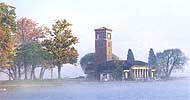
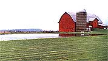
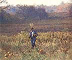
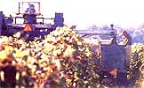
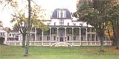
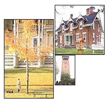
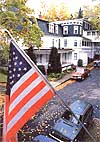
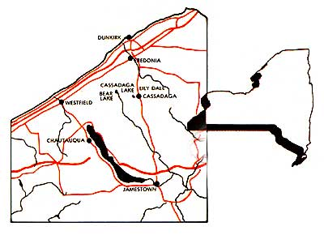
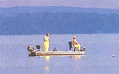

New York's Chautauqua County
Author shares the joys and experience of a visit to rural upstate New York.
By Jack Hope
November/December 1987
Here's the seventh in a serieson the best sections of North America in which to pursue a rural lifestyle.
After a late June day of 83° heat and high humidity, it's cool and, appropriately, nearing dusk when I arrive at Lily Dale, the world's largest spiritualist community, alongside mirror-smooth Cassadaga Lake. Just inside the white wood gate, the directory of "Registered Mediums" tells me where to go within the tidy hamlet of small, mapleshaded Victorian homes. And there at No.10 Third Street, I have an hour-long "reading" with psychic Barbara Conner and her spirit guide, Father David. I hear many promising things, not only about myself-an artistic, blue-green aura surrounding my hands, a new career opportunity within the year and a journey to a cool-climated foreign nation within 18 months (expenses paid, I'd like to believe)-but about the future economic fortunes of Chautauqua County as well.
"A lot of people feel it's just dead here, but I don't," Conner says. "I see a turnaround. Nothing earth shattering, but a definite swing back to about the way it was in the 1950s. Except it won't be big industry this time; it'll be small business. I can't tell exactly what kind. But the cost of living is low here, and anyone with the proper skills and a good business sense is going to make it. "And," she concludes,
"I see you being drawn very strongly to the county. It could be through a spiritual connection, or it could be through an economic opportunity.
" Now that I've been told about my own possible connection with the area, I'm pleased to hear of the impending turnaround. Today, however, it's clear, even to me without psychic insight, that Chautauqua, New York State's westernmost county, is enduring a period of trouble and uncertainty along with much of the rest of the Great Lakes region. The area's oncepowerful industrial complex, centered around steel and autos, that formerly filled local government treasuries and offered starting blue-collar incomes of $22,000 a year, is now crumbling.
Tourism, the county's "other industry," is drawn largely by the fine artistic and cultural programs of world-famous Chautauqua Institution (which hosts 10,000 visitors a day for summer programs of drama and music, as well as theological and political debates) and by the geographic good fortune of picturesque, 22-mile-long Lake Chautauqua
and a 40-mile Lake Erie shoreline on the county's northwest border. Restaurant meals, motel rentals, fishing charters and antique sales bring in roughly $3 billion each year (almost exclusively in summertime), mainly from the nearest and biggest cities, Cleveland, Pittsburgh, Rochester, Buffalo and Toronto.
Agriculture, as we know, is not exactly enjoying boom times anywhere in the U.S. And in Chautauqua County, while an amazing 36 % of the land is still devoted to farming of one kind or another, only 10070 of the region's acreage is, as agricultural economists term it, "competitively viable." When the county was founded in 1811 and marketed by the Holland Land Company (as an agricultural mecca with the Erie Canal soon to provide a watery connection with New York City), the future there looked promising. But by 1859 when railroads linked the east and west coasts, the region was passed by for the better cropland in places like Kansas and Nebraska.
Today, in a slim, seven-mile band along Lake Erie where the soil is well drained and the growing season is lengthened to 167 days by the lake's presence, every square inch that is not a front lawn or cemetery seems to be planted in grapes. Chautauqua County is New York's biggest source of wine and jelly grapes by far, and is one of the leading counties nationwide. But as the area's topography slopes quickly upward from 570 feet alongside Lake Erie to roughly 2,000 feet on the Allegheny plateau along the Pennsylvania border, the climate becomes less forgiving and the soil more clay-laden and infertile. (There are exceptions, particularly in river bottoms and along the flood plain of Chautauqua Lake.)
Clearly not the land, not the resurgence of industry, not tourism, nor anything on the horizon is about to alter the fortunes of Chautauqua County, where per capita personal income is at present only $9,897 per year, painfully lower than the state average of $13,014. And what most depresses government officials, what makes them often speak as if the county were a place with only a past, is the persistent exodus of residents, mostly young people looking elsewhere for a future. Because of this drain, Chautauqua County's population of roughly 147,000 is only 11,700 more than in 1950.
"If you're looking for work here, at anything more than minimum wage, then all I can say is `lots of luck!' " says Paul Cybart, 35, lifetime county resident, owner of the Pro-Angler sport shop in downtown Dunkirk and sometimes charter captain for parties of sport fishermen on Lake Erie. "But if you're like me, if you love the outdoors and you already have a job, then there's no better place to live than Chautauqua County. Let me put it like this: Even if I were to win the lottery, there's no way I'd move away from here. It's a sportsman's paradise.
" At 6:45 a.m. we are already five miles out of Dunkirk Harbor, burbling along in Cybart's 18foot outboard, the Black Horse (named after a local ale Paul enjoys). We've strung out a variety of lures at a variety of depths from 17 to 35 feet in an attempt to attract Lake Erie's two most popular indigenous fish, the finefighting smallmouth bass and the fine-tasting walleye pike. As we move west, keeping a halfmile offshore, Cybart enthusiastically rattles off his list of reasons why the county is the best place to live in all the world. Predictably, they have a certain sameness to them-good muskellunge fishing in Chautauqua Lake, good fishing for brown and rainbow trout in Cataraugus Creek, good spawning runs of coho and Chinook salmon in Canadaway and deepgorged Chautauqua creeks, good canoeing on Cassadaga and Conewango creeks, good downhill and cross-country skiing and good deer and turkey hunting throughout most of the county. Most important of all is the wonderful fishing in Lake Erie itself, not only for most of the above scaled creatures, but also for lake trout, perch, sheepshead (a freshwater drum), smallmouths and walleyes.
The lake, Cybart stresses, is an asset and an environmental success story that cannot be overemphasized. A mere 15 years ago it threatened to die of pollution, to turn into solid sludge. However, drained steadily and aggressively by the Niagara River, Erie's water is replenished far more quickly (every three years) than any other Great Lake. So, once pollution controls for industry and municipalities were in place around its shoreline, it made a quick turnaround. Today the beaches have bathers and the fish are back. In fact, Erie's sport-fishing reputation grows by leaps and bounds, delighting anglers and supporting, Paul says, a dozen Chautauqua County charter boat captains like himself-twice as many as there were two years ago and most likely half as many as there'll be two years hence. Such charters consist of groups of three or four fishermen who pay about $300 a day to pursue the lake's finny treasures.
This morning, though, the fish seem either sated or asleep, and I feel my spiritual pull to Chautauqua County beginning to slack en. But at 9 a.m., after a breeze from the northwest lifts a chop on the dark water, one of our outrigger rods bends double. The first fish of the day is always the most exciting, and I pounce on the rod and begin to wind in madly. "Pump it, pump it!" Cybart impatiently reminds me as he sees me trying to reel the fish in directly. But then, suddenly, two more of our five rods bend and for the next two hours or so we are busy, almost steadily, hauling in fish. We easily take our five-fish-apiece limit of 18-inch walleyes, and we catch and release more and bigger smallmouth bass-19 fish, averaging probably 16 inches-than I've ever caught elsewhere in so short a time.
At the end of the sunny, successful morning-with my arms worn out from winding the reel, my vitamin D quotient filled for the next decade and a half and the pleasant prospect ahead of devouring walleye fillets of my own catching, fried in butter-it now seems to me that Chautauqua County is every bit as fine a place to live as Cybart claims it to be. It strikes me, too, that Paul is one of those flexible, skillful souls advocated by Lily Dale medium Barbara Conner, fully capable of adjusting to the county's evolution from an industrial past to a future in small business. In fact, for the first 10 years of his adult life, Cybart worked for The Firestone Tire and Rubber Company. In 1980, when the plant's workers were, as usual, on strike and the signs were there that the factory was about to shut down for good, he cast about, finally working his way into the angling shop and charter boat businesses that today support him, his wife, Marylyn, and their three kids.
It now dawns on me that my own natural calling, once I move to Chautauqua County, might be to run a charter boat. I will arise at five each morning, breakfast on bacon and eggs with my out-of-county customers at Mark's Restaurant on the corner of Central Avenue and Route 5 in Dunkirk, and spend my days pleasantly hauling in walleyes or salmon or trout, selling monofilament and leeches and Bombardier lures on the side.
One business I would not venture into, though, is
commercial
fishing on Lake Erie. Even though the lake now has more fish than ever, the New York State legislature has passed a succession of laws restricting the way in which "the commercials" may ply their trade.
Gill nets were banned in 1986, in large part because 15,000 sport fishermen, like Paul and his customers, bombarded the state capital at Albany with letters pointing out that the indiscriminate gill net was inadvertently killing thousands of such purely sport fish as brown trout and rainbows. This confined the county's handful of commercials to "trap nets": bottom-set, stationary nets that simply serve as holding pens for the fish and from which the prohibited sport species may be removed and released without harm. But the two target species of commercial fishermen are walleyes and perch, and in a new law to take effect in 1988, no walleyes may be taken with a net of any kind, which further restricts the activities, and the profits, of these fishermen.
Sport and commercial fishermen, competing predators, are mortal enemies everywhere. But in a place as small as Dunkirk, that adversarial relationship becomes personal, and people choose up sides. Denny Frazier, 41, lifetime resident and crewman on the Mary S, one of only two commercial boats still working out of Dunkirk Harbor (last year there were three), bitterly denies the sport anglers' basic contention that commercial fishermen do serious damage to the lake's populations: "If they don't go out every day and get their limit," he says of the charter captains, "they come back and say, `Oh, the commercials are raping the lake!' And some people believe them. But they don't remember, like I do, that there used to be 15 or 20 commercial boats going out of here, so how could we be raping the lake with only two of us left?" He shakes his head. "You used to be respected in Dunkirk if you were a commercial fisherman. It was the same as if you worked in a steel mill. And a lot, a lot, of people raised their families that way. But these days, many folks look at you as if you were some kind of bandit.
" While it has three sizable villages-Jamestown, with 35,000 people, Dunkirk, with 15,000 and Fredonia, with 10,000-Chautauqua County has, by official New York State Department of Commerce definition, no "urbanized areas." Nor does it have anything that would qualify as a suburb, that most regimented but bland of all American places to live. Buffalo, the nearest big city, is considered by county residents as being too distant to commute to. So almost everyone who resides within the county also works within it-whether as professor at the state universities at Fredonia and Jamestown, secretary at the county seat in Mayville or security guard at the Chautauqua Institution-and drives from home to work on pleasant, two-lane roads past marshes and cows and brush lots, commuting for a county average of only 15.4 minutes each way.
Because Chautauqua County is real American Country, self-contained and mostly isolated from the mainstream, it has the assets of lifestyle that naturally accrue. The air is clean, a few doctors still make house calls, and baby-sitting can cost as little as a dollar an hour. If you run short of cash in midwinter, merchants in town will extend you credit until May when your work picks up again, and if somebody in your family is ill or about to have a baby, the town snowplow, without asking, will make a free pass up and down your driveway after every major snowstorm, just in case you have to get to the hospital. Even within village limits, if you
want to keep a pet goat or fertilize your garden with chicken manure, there's most likely no zoning ordinance to stop you (seven of Chautauqua's 27 townships have no zoning whatsoever, and only nine have town police). And even if there is an ordinance, there's probably no one from the county sheriff's department who would bother to enforce it. Maybe nicest of all, kids are safe riding their bikes even on major thoroughfares, they are not robbed of their lunch money or baseball gloves in public school, and, in some small pockets of the county, they are still innocent and secure enough to wave to a stranger in a passing automobile.
Chautauqua Countians believe in the power of advertising. And they advertise most things-from home knitting and homemade chocolates to septic tank cleaning and the Second Coming-with either bulletin board notices or small handmade signs stuck in thousands of lawns and corners of windows throughout the county. For the most part these signs speak of lean times, of businesses or farms gone bad or, even more desperately, of people hoping that some passing neighbor (not tourists, clearly) will stop, knock at the door and offer to buy a picnic table or one of only two 10-year-old autos sitting on a lawn near Brocton that calls itself "S&S Auto (BuySell-Trade).
" The signs lend credence to the claim in a 1986 report by the county's Department of Planning and Development that nothing much productive is going on, that increasingly the county's economy amounts only to "doing each other's laundry.
"But not every Chautauquan believes that doing each other's laundry is all that bad. Nor does everyone subscribe to the notion that the county's loss of industrial employment and its essential stagnation of population justifies gloom. Slim, bearded and wire-rimmed, 37-year-old Mitch Fitzgibbon looks the part of a former hippie. Unlike most of that once modestliving, socially and environmentally concerned generation, though, he did not shift into real estate speculation and BMW ownership and money market funds once the organic ideals of the late '60s and early '70s went out of vogue.
Rather, postcollege in 1974, he came to Mayville where his family summered, and, after a kind of earthy apprenticeship under a local carpenter-sawyer farmer, took a two-week seminar in smithing and loved it. He built his own forge, bought hammers and an anvil, was given a vise and, virtually overnight, became the village blacksmith. He married a local woman, Peg McAninch, who worked in nearby Westfield Hospital as Fitzgibbon struggled to build a clientele. They bought four acres and a carpenter's delight of a house, and built a rough-lumber smithy, on rural Quilliam Road where they now live with sons Andrew, seven, and Thomas, two, and various beasts.
CHAUTAUQUA COUNTY FACTS
Area
1,070 sq. mi.
Economy
1. manufacturing; 2. wholesale and retail trade; 3. service; 4. government
Expenses
Taxes: 7% sales; property, from 2.5% (rural) to 4% (urban) of real value House values: $10,000 to $150,000; avg. $32,000 Rentals: $150 to $500 Land: $250 to$ 1,000 per acre
Climate
Two zones: Lake Erie Flood
Plain and Allegheny Plateau
Flood Plain: avg. precipitation,
37", includes 60" snow; avg.
daily highs and lows: January,
32.7°F and 19.5°F;July,79.5°F
and 63.8°F Plateau: avg. precipitation, 42", includes more than 200" snow; avg. daily highs and lows: January, 32°F and 3°F; July, 77°F and 57°F
Population
147,000(1980)
Average Monthly Ways
$1,350(1986)
Education
19 rural and 2 city school systems; 1984 graduation rate, 95.9% compared to NYS avg. of 95.5%. SUNY college, Fredonia, (4year, some Masters programs, music reputation); Jamestown Community College (2year); Jamestown Business College
Density
Less than 25 people per sq. mi., rural; 1,500 per sq. mi., lakeshore; 3,500 per sq. mi., urban
Unemployment
7.5% (1987)(Persistent out-migration of employment-age residents distorts the figure downward.)
Through word of mouth and the crafts grapevine, the demand quickly spread for Fitzgibbon's work-which ranges from repairing horse hitches and steel-wheeled Amish wagons to creating fireplace tools and rigging fixtures for restored sailing vessels to forging massive, meticulous, oak-leafed hallway gates in the homes of the rich. Mitch's sales, plus a way of living that includes wood heat,
a vegetable garden, a second-hand car, modest Westfield Township real estate and school taxes ($700 a year on Fitzgibbon's $31,000 assessed valuation) and not much in the way of dining out or designer clothing or wild weekends in Atlantic City, enables the Fitzgibbon family to live well, securely, very comfortably in Chautauqua County.
"Your medium friend was exactly right in what she said about the low cost of living here," Mitch smiles as he forges and bends, forges and hammers, a red-glowing shaft of steel he is fashioning into a coat hook for me. "Except that there's more to it than things not costing much. You just don't feel the pressure to spend on a lot of things you would if you lived, say, in Shaker Heights or Woodstock. Nobody here pays $25,000 for a car. They're not competing to get their four-year-olds into $3,000 preschool programs.
They're not saying, `Hey, let's go to Aruba for a suntan!' Peg and I almost never take a `real' vacation, in part because it's so low pressure and pastoral righthere. Every day in summer we'walk down to Little Chautauqua Creek for a swim. If we want to hear Chopin or Judy Collins or see Shakespeare, we drive six miles to the Chautauqua Institution. And in winter there's big snow, so we snowshoe or cross-country or go sledding with the boys right here on the dirt road past our house. There's hardly any traffic."
My white-hot coat hook is done. Fitzgibbon quenches it and it turns blue-black, looking to me like an elegant, ornate, giant fishhook. "If anybody is thinking about moving to Chautauqua County," he says thoughtfully, "I would tell them you have to be versatile. But if you are, and if you're willing to lead a pretty local life, it's one of the few places around you can attain real independence.
" It's noon. Fitzgibbon takes off his leather apron and we walk to the garden to see if any of the rhubarb is still worth eating. "Chautauqua County isn't a place a lot of people will be drawn to," he concludes, "because there's no way you can come here expecting to find an existing job. But what you should do is come and look around-see what needs doing. Then simply do it, create your own job. Just like your psychic said." Fitzgibbon's modest notions for the future of Chautauqua County collide with every aggressive economic-growth model known to man. Nevertheless, it is clearly the county's near-steady population and the lack of developmental pressures on its land that make it a good and green place to live for him or you or me. And unlike most rural places to which you might relocate, the county has the civilizing influence of the venerable Chautauqua Institution.
Once a training ground for Methodist Episcopal Sunday school teachers, it is now a nonsectarian, multicultural community on 1,200 acres alongside Lake Chautauqua. Here, for modest fees, you can take lessons in voice or French or dance, hear a symphony orchestra, attend conferences on U.S.-Soviet relations and rub elbows with such celebrities as John Denver, Ravi Shankar and Ed Meese. And then there's the curious link with the Institution's religious roots called Palestine Park. Built along the shore of Chautauqua Lake in 1874, the park is a 100-yardlong, built-to-scale, topographical replica of the entire Holy Land, containing rock-sculpted representations of Bethlehem, the Mount of Beatitudes, Hebron, Mount Hermon, Jacob's Well and, when the tap is turned on, an actual, waterfilled, 20-foot-long Dead Sea with an occasional soda can floating in it. As the guide sign says, though: "The directions [of the park] are reversed.The northern mountains are in the south near the sports club and Lake Chautauqua represents the Mediterranean Sea."
Chautauqua County's primary assets of lifestyle remain, as mystics and others tell us, its isolation, its informality and unhurried pace and its low prices of everything from haircuts to chimney sweeping. When I get my spiritual/economic calling, I know I could buy 10 acres of wooded land for probably $5,000 and build the small house I would need for another $35,000, without much worry, that in five years a builder would turn the farm across the road into a housing development. Even though the soil is poor, I know I could get enough horse manure from my Amish neighbors to fertilize and aerate my garden, in return for which I would let them use my telephone and give them rides to town. And I know I could save a lot of money on meat each year by getting a landowner's permit to shoot the three or four whitetail deer that I would claim were munching my pole beans.
Insofar as honest work, I believe I would bill myself-via a lawn sign in the best Chautauqua County tradition-as a "Fishermen's Medium: All Secrets Revealed on Where and How to Catch the Big Ones-$25." (All I would do, really, is psychically refer the outof-county anglers to Paul Cybart and the Black Horse, for which I'd take a commission.) And when my customers asked what the muskellunge and walleyes were biting on this week, I'd whip out a giant trolling lure, equipped not with your everyday one-inch treble hooks but with three hand-forged, sharpened coat hooks, to impress upon them the truly monstrous size of my county's fish. The lures, naturally, would be made by the Mayville blacksmith, and I would split the profits with him. This, however, is but one small plan for making it in Chautauqua County. There are surely many others.
|
 CREAM OF THE COUNTRY County farms sell for as little as $250 per acre |
 ILLUSTRATIONS BY ALISON SEIFFER Fertile lakefront land supports many vineyards, but inland acreage is less productive. |
 Chautauqua County is studded with stately historic homes and public buildings. |
|
Many rural roads are open to snowmobiles in winter, and summer fishing is both a business and a pleasure |
 |
 |
|
 |
 |
 |
|
|
|
|
 |
|
 |